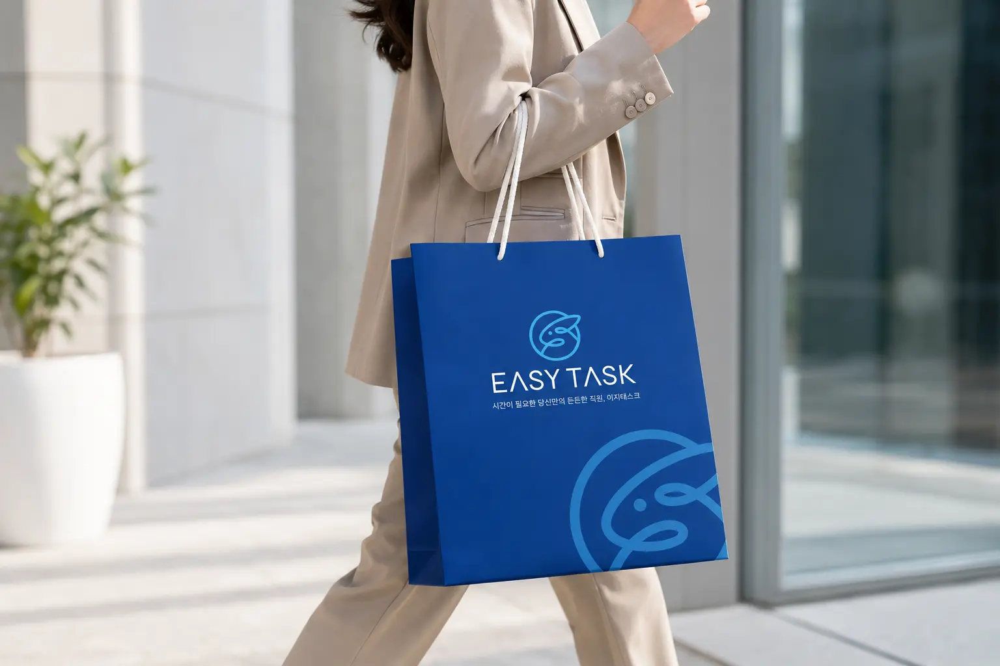
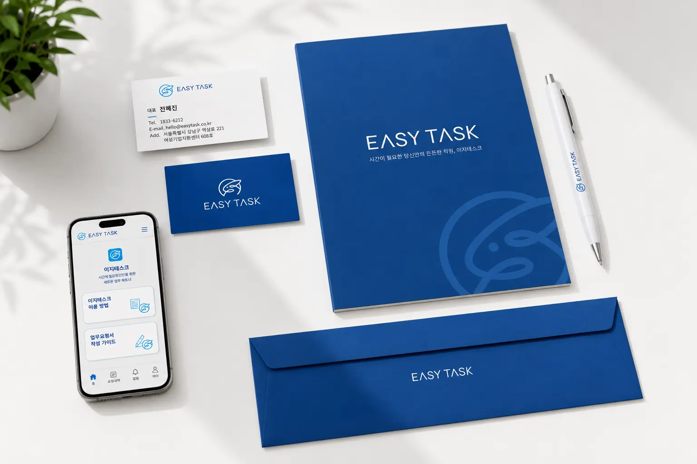
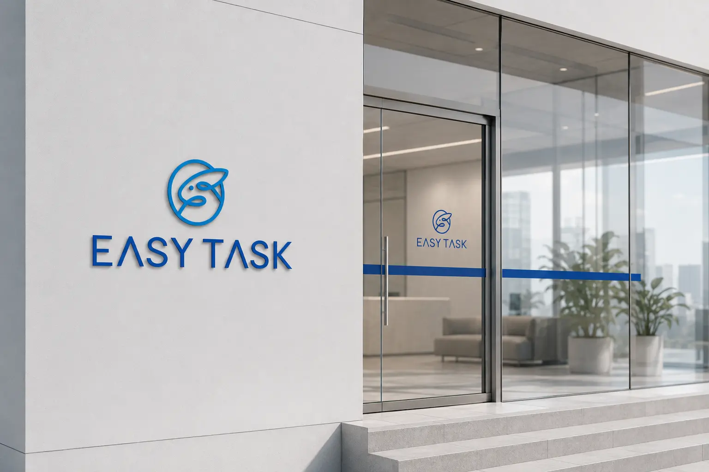
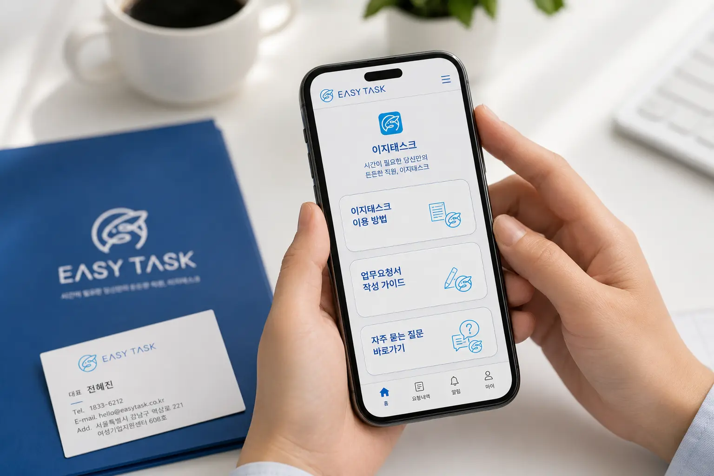

이지태스크의 목표는 사용자가 어렵고 번거롭게 느끼는 업무 요청 과정을 쉽고 편안하게 바꾸는 것이다. 서비스 이용 방법, 작업요청서 작성, 앱 다운로드 등 핵심 기능을 직관적으로 안내해 누구나 쉽게 접근할 수 있도록 구성한다. 브랜드 전반에서는 전문적인 업무 지원 서비스라는 신뢰감과 귀여운 캐릭터 기반의 친근한 이미지를 함께 전달한다. 웹사이트, 모바일 화면, 쇼핑백, 명함 등 다양한 접점에서 동일한 시각 언어를 유지해 브랜드 인지도를 높인다. 최종적으로는 이지태스크를 바쁜 일상과 업무 환경에서 믿고 맡길 수 있는 편리한 업무 파트너로 자리 잡게 하는 것을 목표로 한다.
Portfolio / Brand Identity
EASYTASK
이지태스크는 시간이 부족한 사용자에게 업무 지원과 생활 편의를 제공하는 비대면 업무 대행 서비스 브랜드이다. 브랜드는 “시간이 필요한 당신만의 든든한 직원”이라는 메시지를 중심으로, 복잡한 업무를 쉽고 빠르게 해결해주는 친근한 서비스 이미지를 구축한다. 무드보드에서 보이는 귀여운 캐릭터, 말풍선, 부드러운 일러스트 감성은 브랜드가 지향하는 편안함과 접근성을 보여준다. 이지태스크는 단순한 업무 처리 플랫폼이 아니라 사용자의 부담을 줄이고 시간을 되찾아주는 실용적인 도우미 브랜드로 설계되었다. 전체적으로 신뢰감 있는 블루 컬러와 부드러운 그래픽을 결합해 전문성과 친근함을 동시에 전달한다.
- Scope
- UX/UI / Service
- Studio
- BDLab
- Year
- 2026

이지태스크의 핵심 메시지는 “시간이 필요한 당신만의 든든한 직원”으로, 서비스의 기능과 사용자 혜택을 명확하게 전달한다. 이는 단순히 업무를 대신 처리하는 것을 넘어 사용자의 시간을 확보해주고 일상의 여유를 만들어준다는 의미를 담고 있다. “사람찾는 번거로움 없이 빠르고 편리하게”라는 표현은 서비스의 간편성과 효율성을 직접적으로 보여준다. 브랜드 메시지는 복잡한 설명보다 짧고 명확한 문장으로 구성되어 사용자가 서비스의 가치를 빠르게 이해할 수 있도록 돕는다. 전체적으로 이지태스크는 시간 절약, 업무 편의, 신뢰 가능한 지원이라는 메시지를 중심으로 브랜드 방향성을 전개한다.
이지태스크의 디자인은 블루 계열의 명확한 컬러와 부드러운 캐릭터형 심볼을 중심으로 구성되어 있다. 무드보드에서 보이는 귀여운 일러스트와 말풍선 이미지는 서비스가 딱딱한 업무 플랫폼이 아니라 편안하게 다가갈 수 있는 브랜드임을 보여준다. 전체적인 레이아웃은 화이트 배경과 블루 포인트를 활용해 깨끗하고 직관적인 인상을 만든다. 웹과 모바일 화면에서는 큰 메시지, 명확한 버튼, 기능 카드 구성을 통해 사용자가 필요한 정보를 빠르게 찾을 수 있도록 설계되었다. 디자인 전반은 업무 서비스의 신뢰감과 캐릭터 브랜드의 친근함을 균형 있게 결합한 것이 특징이다.


